缩进设置
回忆上节课内容🤔
- 这次了解了颜色的细节
- 设置 256 色模式
:set t_Co=256- 然后确定了具体的各种颜色
- 还可以生成网页
:TOhtml - 还有什么好玩的么？🤔

缩进设置
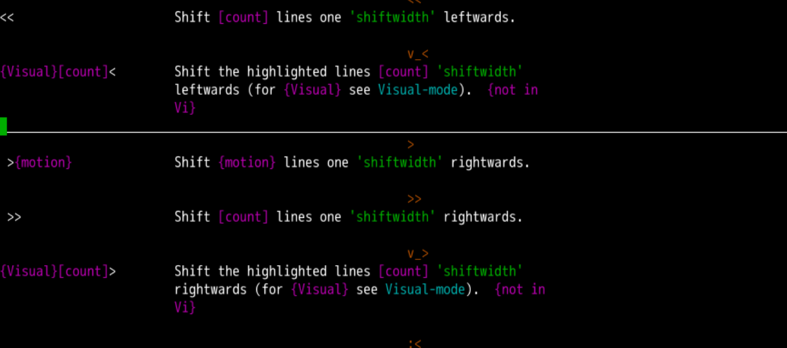
- 在正常模式下
- 使用
<<可以向前缩进 - 使用
>>可以向后缩进 - = 可以让当前行自动缩进
- 使用
- 使用 g g = G
- 可以从头自动缩进到结尾
- 这超爽🤪
显示缩进
- 我们编程的时候会遇到缩进
- 这缩进究竟是
空格呢？还是tab呢？ - 要把
空格和tab区别开来
- 这缩进究竟是
:set list使得列表生效- tab 会被显示为
^I - 行尾会显示
$
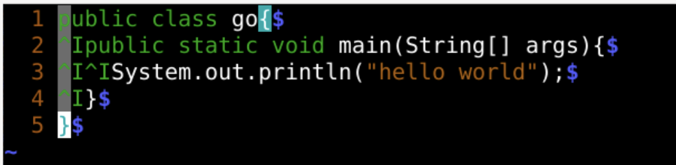
:set nolist使得列表失效- tab 会被显示为空格缩进
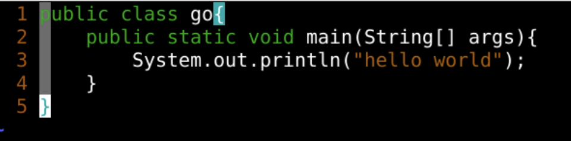
- 但是好像缩进看起来只有两格了
- 与实际不符
- 能修改么？
定制 tab 显示
- 把特殊字符作为
listchars组显示出来 :set listchars- 设置
listchars :set listchars=eol:$,tab:>-,space:_tab对应>->是开头-在后面补位
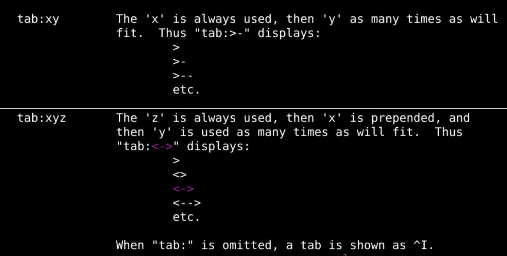
space对应_-
eol对应$ -
:h listchars可以查看相关手册
空格颜色
:hi SpecialKey ctermfg=DarkRed guifg=grey70- 设置
listchars相应的颜色 - 设置得特殊一点
- 设置
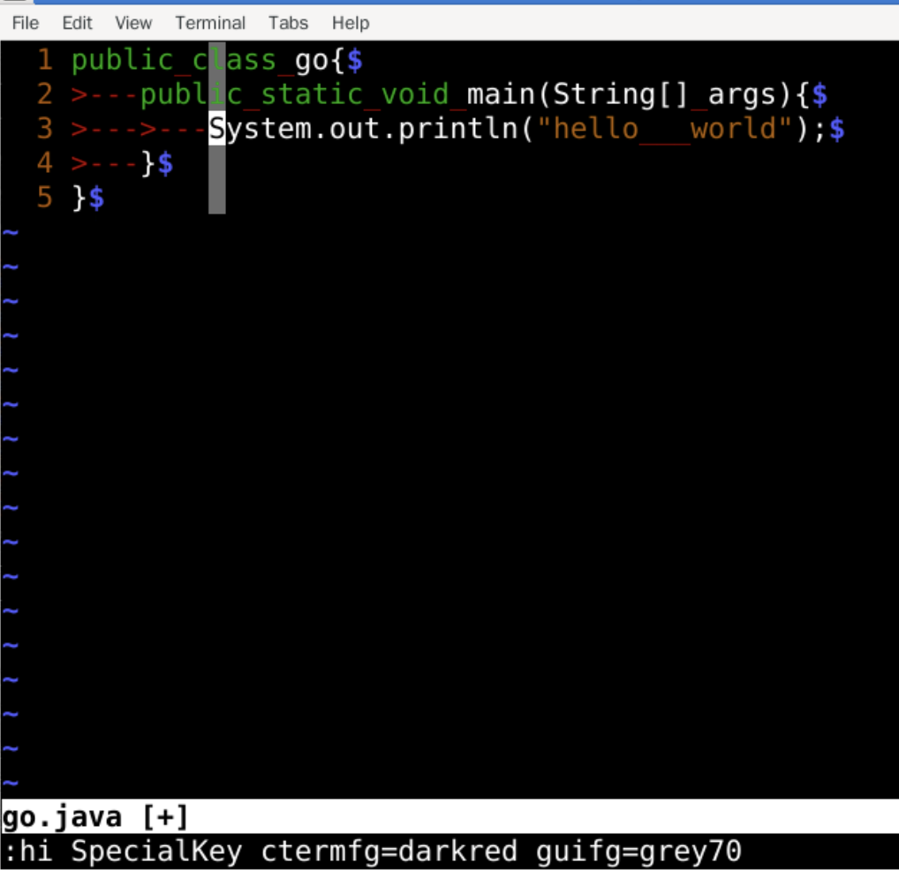
最终效果
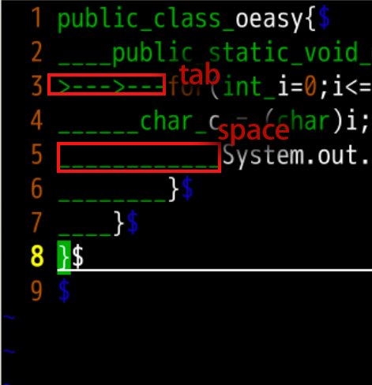
- 建议统一能用 tab 的时候就用 tab
- 减小文件容量
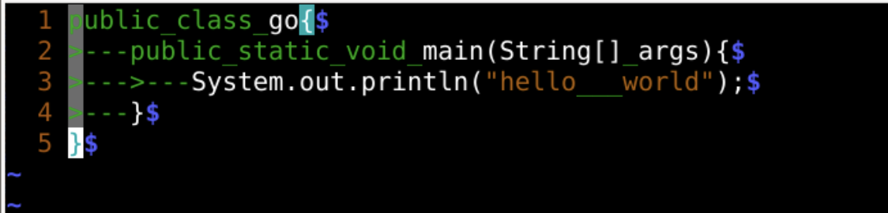
基础
- shiftwidth值是整个缩进的基础
:set shiftwidth=4shiftwidth是一个基础的值，对应- 按下
>>缩进的宽度 - 按下 tab 缩进的宽度
- 退格或者删除
\t时缩进的宽度
- 一般
tabstop、softtabstop都与他相同- 一般都是 4
- 如果
shiftwidth是 0 的话 - 就按照
tabstop来
解释 tab 宽度
tabstop是读取文件时用到的- 读到
\t字符时 - 解释他对应多少个空格的宽度
- 一般都是 4 个空格
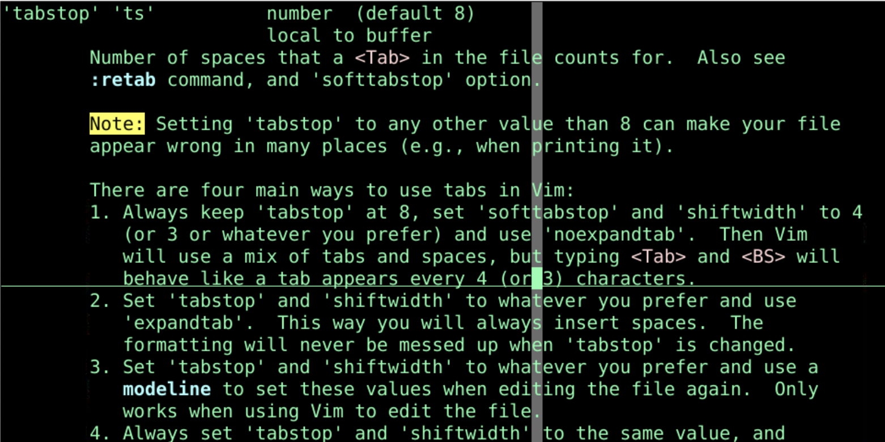
softtabstop 处理空格的数量
- 如果
softtabstop等于 0- 特性取消，一切按照
tabstop来
- 特性取消，一切按照
- 如果
tabstop=4、softtabstop=8- 按下 tab 时
- 一次插入 8 个位置
- 看起来像插了两个 tab
- 要删除 tab 时
- 1 次删除空格 8 个
- 看起来像删了两个 tab
- 按下 tab 时
- 可以试试，能看出来
- 当他是负数的时候
shiftwidth起作用 - 所以说
shiftwidth是基础
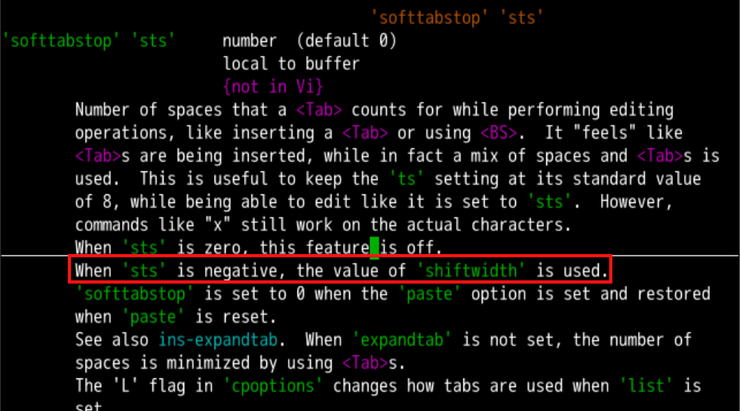
扩展 tab
:set expandtab- 可以把输入的
tab变成空格
- 可以把输入的
- 设置好之后，在正常模式下
- > >
- 或者在插入模式下 tab 的时候
- 都看不到
>---，而是直接变成空格_
- 反之
:set noexpandtab之后- 插入的
tab都还是>---
- 插入的
:h expandtab可以查看相关手册expandtab可以简写为et
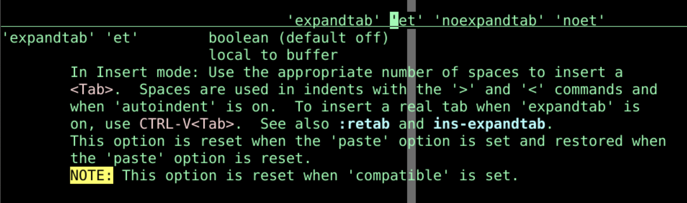
- 那已经存在的tab怎么办呢？
强制拓展
:retab!- 把已经存在的 tab 强制扩展成为空格
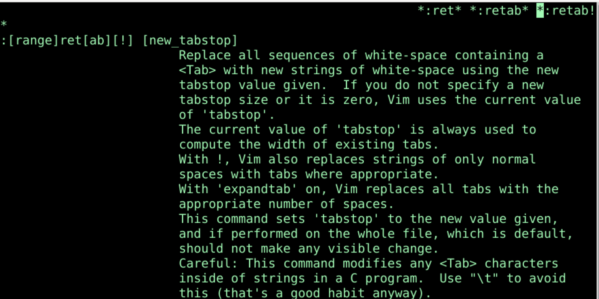
- 转过去之后
- 没有转回来的命令
- 慎重吧
- 我觉得tab挺好的
回车之后自动缩进
:set autoindent- 可以简写为
:set ai - 添加与上一行一致的缩进
-
取消为
:se noai -
:set smartindent - 简写为
:se si - 在
autoindent的基础上根据{、}来调整本行缩进 - 取消为
:se nosi -
需要保证
:se nopaste -
:set cindent - 根据类似于 c、java 的代码动态调节缩进
- 见到
if之类的可以自动缩进 - 取消为
:set nocindent
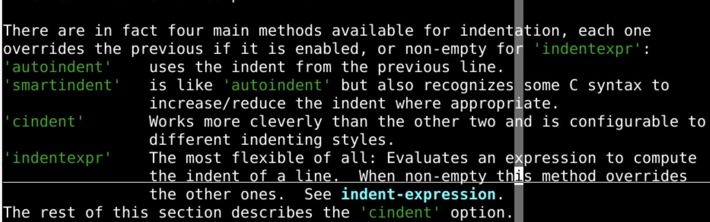
整体设定为
:set noexpandtab:set shiftwidth=4:set tabstop =4:set softtabstop=4:set autoindent- 简写为
:set noet sw=4 ts=4 sts=4 ai - 这都个人喜好
- 没有绝对规定
总结
- 这次了解了缩进的各种方式
- 正常模式下用
<<缩进 - 插入模式下用
tab缩进 - 有关于缩进对应空格数的参数
- expandtab
- shiftwidth
- tabstop
- softtabstop
- autoindent
- 不同的文件类型可以对应不同的缩进吗？？🤔
- python、java缩进4个
- html、css可以缩进2个
- 下次再说 👋